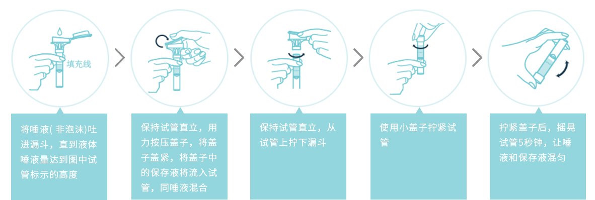

解密儿童基因ID卡
儿童基因ID卡是使用DNA的短串联重复序列（Short Tandem Report）等检测技术建立的个人基因档案。每个人的基因是独一无二的，基因ID通过基因检测技术建立个人基因“标签”，可以实现高效精准的个体身份识别，从而提升儿童寻回的效率和成功率。这些结果可以为消防员、警察、矿工等高危职业人群及易走失的学龄前儿童建立基因档案数据库。
搜救
身份辨认
打击拐卖
基因采集
基因采集的方法除采血外提取基因样本还可以采用提取口腔黏膜细胞的方法和唾液采集。唾液采样检测法是目前新出现的一种基因采集的方式，此方法更加方便快捷，并且实现无创采集，检测效果和提取口腔黏膜检测效果一样。
